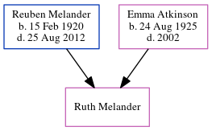

Ruth Melander
[ Home ] | [ Calendar ] | [ Surnames Index ] | [ Census Index ] | [ Family History ]The child of Reuben Melander and Emma Atkinson, Ruth Melander was the fifth cousin on the father's side of Nigel Horne.
Parents
- Reuben Arthur was born on Feb 15, 1920
- Emma Elizabeth was born on Aug 24, 1925
Family Tree
Generated by ged2site. Last updated on Jun 11, 2024